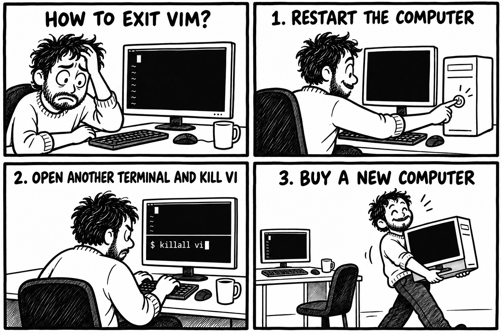

Administración de servidores GNU/Linux
Clase 7: Edición de archivos de texto en la terminal
Módulo 1 — Operación de Sistemas Operativos GNU/Linux
Temas de la clase 7
Objetivos de la clase
Al finalizar esta clase vas a poder:
- Abrir, buscar, modificar y guardar un archivo con Nano.
- Reconocer los modos de Vi/Vim y volver al modo normal.
- Desplazarte y realizar cambios básicos con Vi/Vim.
- Guardar el trabajo o salir descartando los cambios.
- Crear y transformar texto sin abrir un editor.
- Comparar una versión nueva antes de reemplazar la anterior.
En la clase anterior aprendimos a leer y buscar. Ahora vamos a modificar archivos sin perder de vista qué cambió.
Una herramienta para cada tarea
| Necesidad | Herramienta |
|---|---|
| Recorrer un archivo sin modificarlo | less |
| Editar con atajos visibles | Nano |
| Editar mediante modos y órdenes | Vi/Vim |
| Crear o agregar una línea conocida | echo con > o >> |
| Repetir una sustitución | sed |
| Comprobar qué cambió | diff -u |
La práctica se hace con copias dentro de ~/laboratorio-clase7.
Editar archivos de texto
abrir → cambiar → guardar → verificar
Consultar y editar
Consultar
less servidor.conf
El visor recorre el contenido sin cambiarlo.
Editar
nano servidor.conf
vim servidor.conf
El editor permite modificar el contenido y luego decidir si se guarda.
Abrir un archivo en un editor no obliga a modificarlo.
Texto plano y configuración
nombre=servidor-aula
puerto=8080
entorno=pruebas
Muchos servicios guardan su configuración en archivos de texto.
El formato parece sencillo, pero cada nombre, separador y valor tiene un significado.
Un carácter fuera de lugar puede hacer que un servicio rechace la configuración.
Antes del primer cambio
- Confirmar el servidor y la ruta del archivo.
- Revisar con qué usuario estamos conectados.
- Guardar una copia que permita volver atrás.
- Definir cómo vamos a comprobar el resultado.
pwd
whoami
cp servidor.conf servidor.conf.original
Una copia para comparar
mkdir -p ~/laboratorio-clase7
cd ~/laboratorio-clase7
cp servidor.conf servidor.conf.original
diff -u servidor.conf.original servidor.conf
diff -u permite revisar cada línea modificada.
Una copia de trabajo ayuda en la práctica. Un respaldo real necesita otra ubicación y un procedimiento de recuperación.
Consultas
archivo correcto → copia → edición → comparación
GNU nano
Atajos y mensajes a la vista
Abrir o crear un archivo
nano servidor.conf
- La barra superior muestra el nombre del archivo.
- La parte central contiene el texto.
- La zona inferior muestra mensajes y atajos.
^ representa Ctrl. M- representa Meta, normalmente Alt.
^O = Ctrl+O M-U = Alt+U
Moverse y buscar
| Atajo | Acción |
|---|---|
| Flechas | Mover el cursor |
Ctrl+A / Ctrl+E | Comienzo / final de la línea |
Ctrl+Y / Ctrl+V | Pantalla anterior / siguiente |
Ctrl+W | Buscar texto |
Alt+W | Repetir la búsqueda |
Alt+G | Ir a una línea y columna |
Después de Ctrl+W, Nano pide el texto en la parte inferior.
Cortar, copiar y pegar
| Atajo | Acción |
|---|---|
Alt+A | Iniciar o finalizar una selección |
Alt+6 | Copiar la selección o la línea |
Ctrl+K | Cortar la selección o la línea |
Ctrl+U | Pegar |
Alt+U / Alt+E | Deshacer / rehacer |
Si la terminal interpreta Alt de otra manera, la ayuda visible de Nano permite confirmar el atajo.
Guardar y salir
| Atajo | Acción |
|---|---|
Ctrl+O | Guardar. Nano pide el nombre del archivo. |
Ctrl+X | Salir |
Ctrl+G | Abrir la ayuda |
Ctrl+C | Mostrar la posición del cursor |
Si hay cambios pendientes, Nano pregunta si queremos guardarlos.
Conviene leer la pregunta antes de responder. El editor indica qué acción está por realizar.
Consultas
abrir → buscar → modificar → guardar → salir
De Vi a Vim y nvi
Una familia de editores con un núcleo común
Vi nació como editor visual
Bill Joy desarrolló Vi en Berkeley durante la década de 1970. El programa surgió a partir de ex, un editor que trabajaba principalmente con líneas.
Las nuevas terminales permitían mover el cursor y actualizar distintas partes de la pantalla. De allí viene el nombre vi, abreviatura de visual.
:w
:q
Las órdenes con : todavía conservan la relación con ex.
Vi no siempre es el mismo programa
Vi histórico
├── nvi experiencia cercana a ex y vi en sistemas BSD
└── Vim compatibilidad con Vi y funciones adicionales
- Vim significa Vi IMproved. Suma ayuda integrada, deshacer en varios niveles, ventanas y resaltado de sintaxis.
- nvi es una reimplementación de
exyvidesarrollada en el entorno BSD. - Nano sigue otra historia. Nació como reemplazo libre de Pico.
¿Qué abre vi en Debian?
readlink -f /usr/bin/vi
update-alternatives --display vi
Dentro del editor también podemos consultar la versión:
:version
Aprenderemos los comandos que comparten Vi y Vim. Las funciones avanzadas de Vim quedan para más adelante.
El modelo de Vi/Vim
La misma tecla puede hacer cosas distintas según el modo
Cuatro modos para empezar
| Modo | Uso |
|---|---|
| Normal | Moverse y ejecutar operaciones |
| Inserción | Escribir texto |
| Visual | Seleccionar texto |
| Línea de órdenes | Guardar, salir y ejecutar órdenes con : |
Normal i a o → Inserción Esc → Normal : → Línea de órdenes
Si no sabés en qué modo estás, presioná Esc para volver al modo normal.
Entrar en modo inserción
| Comando | Dónde comienza a escribir |
|---|---|
i | Antes del cursor |
a | Después del cursor |
I / A | Comienzo / final de la línea |
o | Nueva línea debajo |
O | Nueva línea arriba |
Después de escribir, Esc regresa al modo normal.
“Insert mode” es un estado del editor. No es una orden que se escriba después de :.
Desplazamiento en modo normal
| Comando | Movimiento | Comando | Movimiento |
|---|---|---|---|
h j k l | Izquierda, abajo, arriba, derecha | w / b | Palabra siguiente / anterior |
0 | Comienzo de la línea | ^ | Primer carácter visible |
$ | Final de la línea | gg / G | Primera / última línea |
20G | Línea 20 | Ctrl+F / Ctrl+B | Pantalla siguiente / anterior |
Las flechas también funcionan. Los movimientos propios de Vi se incorporan de a poco.
Borrar, copiar y pegar
| Comando | Acción |
|---|---|
x | Borrar el carácter bajo el cursor |
dd | Cortar la línea |
yy | Copiar la línea |
p / P | Pegar después / antes |
u / Ctrl+R | Deshacer / rehacer |
. | Repetir la última modificación |
Vi llama yank a la copia. Por eso el comando comienza con y.
Operación, movimiento y cantidad
cantidad + operación + movimiento
| Comando | Resultado |
|---|---|
3dd | Cortar tres líneas |
2yy | Copiar dos líneas |
dw | Borrar hasta el final de la palabra |
d$ | Borrar hasta el final de la línea |
cw | Cambiar una palabra y entrar en inserción |
Selección visual
| Comando | Acción |
|---|---|
v | Seleccionar por caracteres |
V | Seleccionar por líneas |
y | Copiar la selección |
d | Cortar la selección |
Esc | Cancelar la selección |
Después de copiar o cortar, p y P pegan el contenido.
Buscar dentro del archivo
| Comando | Acción |
|---|---|
/texto | Buscar hacia adelante |
?texto | Buscar hacia atrás |
n | Coincidencia siguiente |
N | Coincidencia anterior |
/puerto
Buscar no modifica el contenido. Desde la coincidencia podemos movernos o iniciar una edición.
Sustituciones sencillas
:s/pruebas/produccion/
Reemplaza una coincidencia en la línea actual.
:%s/pruebas/produccion/gc
Recorre todo el archivo y pide confirmación antes de cada reemplazo.
En esta clase usamos búsquedas literales. Las expresiones regulares quedan para más adelante.
¿Cómo salir de vi?

Esc vuelve al modo normal.
:q sale cuando no hay cambios pendientes.
:q! sale descartando los cambios pendientes.
Guardar y salir
| Orden | Acción |
|---|---|
:w | Guardar |
:q | Salir si no hay cambios pendientes |
:q! | Salir y descartar los cambios |
:wq | Guardar y salir |
:x | Guardar si hubo cambios y salir |
:w copia.conf | Guardar con otro nombre |
Las órdenes con : se escriben desde el modo normal y se confirman con Enter.
!fuerza una operación del editor. No concede permisos ni reemplaza asudo.
Ayuda y práctica
:help dd
:help :write
Para insertar otro archivo debajo de la línea actual:
:r fragmento.conf
Fuera del editor, Vim incluye un tutorial interactivo:
vimtutor
Consultas
modo normal → movimiento u operación → inserción → Esc → guardar o descartar
Nano y Vi/Vim
Dos maneras de editar desde la terminal
La misma tarea con otra lógica
| Acción | Nano | Vi/Vim |
|---|---|---|
| Modelo | Escritura directa con atajos | Modos y órdenes |
| Buscar | Ctrl+W | /texto |
| Deshacer | Alt+U | u |
| Guardar | Ctrl+O | :w |
| Salir | Ctrl+X | :q |
| Descartar | Responder al salir | :q! |
Nano permite empezar rápido. Vi/Vim ofrece órdenes que se combinan y se repiten.
Lo mínimo para no quedar atrapado
Esc volver al modo normal
i comenzar a escribir
/texto buscar
:w guardar
:q salir
:q! salir sin guardar
No hace falta elegir un editor para siempre. Sí conviene poder abrir, buscar, cambiar y salir con ambos.
No siempre hace falta un editor
Crear o transformar texto desde la shell
Crear contenido con >
echo 'puerto=8080' > servidor.conf
La shell envía la salida de echo al archivo.
- Si el archivo no existe, lo crea.
- Si ya existe, reemplaza todo su contenido.
cat servidor.conf
Agregar contenido con >>
echo 'entorno=pruebas' >> servidor.conf
echo 'registro=activo' >> servidor.conf
| Operador | Resultado |
|---|---|
> | Crea el archivo o reemplaza el contenido |
>> | Crea el archivo o agrega al final |
Antes de usar >, revisá el nombre del archivo de destino.
Una sustitución con sed
sed 's/puerto=8080/puerto=9090/' servidor.conf
s / texto anterior / texto nuevo /
La orden muestra el resultado transformado en la terminal.
En este ejemplo, el archivo original no cambia.
Transformar y comparar
sed 's/puerto=8080/puerto=9090/' servidor.conf \
> servidor.conf.nuevo
diff -u servidor.conf servidor.conf.nuevo
Si la comparación muestra exactamente lo esperado, podemos decidir si corresponde reemplazar la versión anterior.
mv servidor.conf.nuevo servidor.conf
Entrada y salida con el mismo nombre
# Incorrecto: puede vaciar el archivo
sed 's/8080/9090/' servidor.conf > servidor.conf
La shell prepara la redirección antes de iniciar sed. Por eso puede vaciar el archivo antes de que el programa alcance a leerlo.
sed 's/8080/9090/' servidor.conf > servidor.conf.nuevo
En esta clase siempre usamos un nombre nuevo y comparamos el resultado.
Editar o transformar
| Situación | Opción |
|---|---|
| Hay que leer el contexto y hacer varios cambios | Nano o Vi/Vim |
| Conocemos todo el contenido | Redirección con > |
| Solo hay que agregar una línea | Redirección con >> |
| El reemplazo debe repetirse | sed |
| Queremos revisar antes de reemplazar | Archivo nuevo y diff -u |
Resumen de la clase
- Nano muestra los atajos y permite escribir de forma directa.
- Vi/Vim separa el desplazamiento, la edición y las órdenes mediante modos.
- Esc vuelve al modo normal.
:w,:qy:q!permiten guardar o salir. - Los movimientos y las operaciones de Vi se pueden combinar y repetir.
>reemplaza el contenido.>>agrega al final.sedpuede producir una versión transformada sin abrir un editor.- Una copia y
diff -upermiten revisar el cambio antes de aceptarlo.
Actividad práctica
- Laboratorio 6: edición de archivos de texto en la terminal
La práctica usa copias de /etc/services y /etc/hosts dentro de ~/laboratorio-clase7.